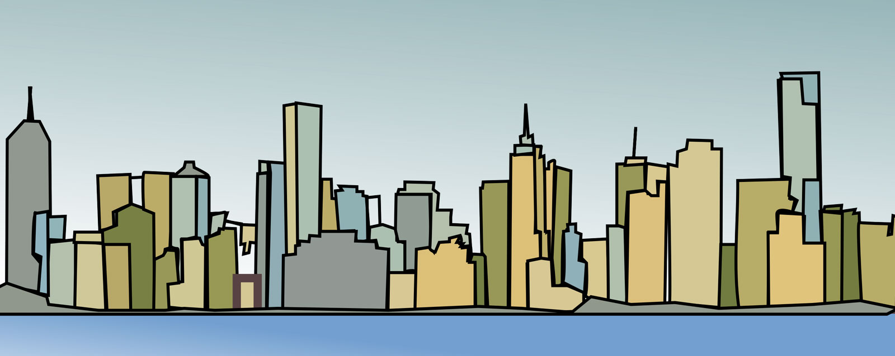

We are pleased to announce the Workshop on Interactive Data Mining co-located with WSDM 2019 in Melbourne, Australia.
In the age of Big Data, Artificial Intelligence, and Data Mining, an aspect often overlooked is the interactive and visual usability of frameworks, tools, and concepts used for ingesting and analyzing large quantities of data. This workshop focuses on aspects related to exactly this, i.e. how do we improve the interaction and usability of modern data mining approaches and how do make them accessible, understandable, and useful to non-experts.
Taking an agnostic view of the application scenario, the workshop intends to serve as a forum for researchers and practitioners working at all levels of abstraction with data mining technologies. Interaction and interactive in the context of the workshop should be seen as anything from UI/UX-related aspects of visual interfaces, to more hands-on interaction with software and hardware used in the general areas of data mining, machine learning, and other concepts related broadly to artificial intelligence.
The aim of this workshop is to explore existing and new interactive methods in machine learning and data mining that help the users to take better, and more informed, decisions. The primary audience of the workshop are researchers and practitioners in data mining from academia and industry with an interest in interaction with and interactivity of data mining approaches.
We invite submissions that may include the following topics, but are not limited to:
The goal of this workshop is to share and discuss research and projects that focus on interaction with and interactivity of data mining systems.
Manuscripts should be formatted using the ACM xxx ? templates (http://www.acm.org/publications/proceedings-template).
All papers will undergo a peer review process by at least two expert reviewers to ensure a high quality. Referees will consider originality, significance, technical soundness, clarity of exposition, and relevance to the workshop’s topics. Papers should be submitted electronically as a single PDF file through the
EasyChair submission system: https://easychair.org/conferences/?conf=wsdmidm2019
If you have questions regarding the workshop, do not hesitate to contact the workshop chairs